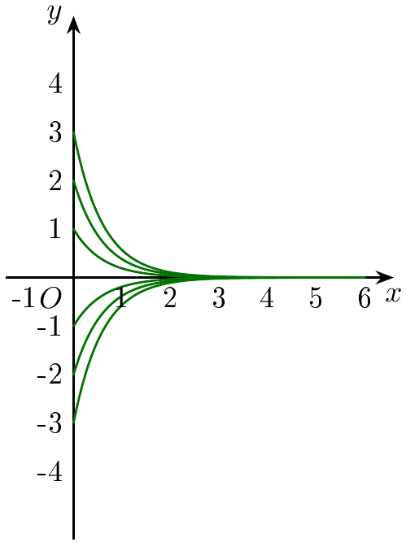

Chapitre 7 : Équations différentielles
Terminale complémentaire · Chapitre 7 — Équations différentielles · cours de Frederik de Peyrelongue
I. Notion d'équation différentielle
1.1 Définition
Une équation fonctionnelle est une équation dont l'inconnue est une fonction.
On cherche les fonctions qui vérifient la propriété $f(x+y)=f(x)\times f(y)$ pour tous $x$ et $y$ réels. L'inconnue ici est la fonction $f$.
On peut remarquer que la fonction exponentielle est une solution de l'équation. Ainsi, on vient de montrer l'existence d'une solution. Le problème devient alors de déterminer si la solution est unique.
Une équation différentielle est une équation dont l'inconnue est une fonction, et dont cette fonction inconnue et/ou ses dérivées apparaissent.
Le plus souvent, la fonction inconnue sera notée $y$.
$\left(E_{1}\right) : y'(t)=5$, pour $t\in\R$. L'inconnue est la fonction $y$ qui dépend de la variable $t$.
On cherche ici une fonction dont la dérivée est constante. D'après notre cours sur les primitives, on sait qu'une fonction du type $f(t)=5t+4$ est une solution. En effet $f'(t)=5$, donc la fonction $f$ vérifie l'équation $y'(t)=5$.
L'équation différentielle $(E_{1})$ peut se noter aussi $\dfrac{\mathrm{d}y}{\mathrm{d}t}=5$ : c'est la notation notamment des physiciens, et cela permet d'indiquer que la fonction est dérivée par rapport à la variable $t$.
$\left(E_{2}\right) : y'(x)=2x$, pour $x\in\R$.
On remarque qu'une solution de cette équation est la fonction $f(x)=x^{2}+5$. On prouve ainsi l'existence ; se pose alors le problème de l'unicité.
1.2 Vérifier qu'une fonction est solution d'une équation différentielle
Prouver que la fonction $g$ définie sur $\left]0\,;+\infty\right[$ par $g(x)=3x^{2}+\e^{x}$ est solution de l'équation différentielle $y'=6x+\e^{x}$ : on remplace la fonction $y$ par la fonction $g$ dans le membre de gauche de l'équation et, par calcul, on vérifie que le membre de gauche de l'équation est bien égal au membre de droite.
Pour tout $x$ de $\left]0\,;+\infty\right[$, on a : la fonction $g$ est une somme de deux fonctions que je peux dériver terme à terme :
Donc $g$ est bien solution de l'équation $y'=6x+\e^{x}$.
II. Primitives d'une fonction
2.1 Définition
Soit $f$ une fonction définie sur $I$. Dire que $F$ est une primitive de la fonction $f$ sur $I$ signifie que $F$ est dérivable sur $I$ et que $F'=f$.
Soit $f(x)=2x$ : alors $F(x)=x^{2}+5$ est une primitive de $f$. En effet, $F$ est dérivable sur $\R$ et
2.2 Ensemble des primitives d'une fonction sur un intervalle
Soit $f$ une fonction définie sur $I$ et $F$ une primitive de $f$. L'ensemble des primitives de $f$ sur $I$ est constitué par les fonctions $G$ définies sur $I$ par
On dit que deux primitives d'une même fonction $f$ sur un intervalle $I$ diffèrent d'une constante.
Si $G(x)=F(x)+k$ sur $I$, alors $G'(x)=F'(x)=f(x)$, donc $G$ est une primitive de $f$ sur $I$.
Réciproquement, soit $G$ une primitive de $f$ sur $I$ ; donc $G'(x)=f(x)=F'(x)$, d'où $G'-F'=0$, c'est-à-dire
Soit $f$ une fonction définie sur un intervalle $I$. Il existe une unique primitive $G$ de $f$ sur l'intervalle $I$ telle que $G(x_{0})=y_{0}$, où $x_{0}\in I$ et $y_{0}$ est un réel donné.
En effet, $G(x_{0})=F(x_{0})+C=y_{0}$, d'où $C=y_{0}-F(x_{0})$, donc
2.3 Formulaire de primitives des fonctions de référence
| Fonction $f$ | Une primitive $F$ | |
| $x\longmapsto a$ \ ($a$ réel) | $x\longmapsto ax$ | sur $\R$ |
| $x\longmapsto x^{n}$ \ ($n\in\mathbb{Z}\setminus\{-1\}$) | $x\longmapsto \dfrac{x^{n+1}}{n+1}$ | sur $\R$ si $n\geqslant 0$ \newline sur $]0\,;+\infty[$ et $]-\infty\,;0[$ si $n\leqslant -2$ |
| $x\longmapsto \dfrac{1}{x}$ | $x\longmapsto \ln x$ | sur $\left]0\,;+\infty\right[$ |
| $x\longmapsto \dfrac{1}{\sqrt{x}}$ | $x\longmapsto 2\sqrt{x}$ | sur $\left]0\,;+\infty\right[$ |
| $x\longmapsto \e^{x}$ | $x\longmapsto \e^{x}$ | sur $\R$ |
2.4 Propriété de linéarité
Soient $f$ et $g$ deux fonctions définies sur un intervalle $I$, et $F$ et $G$ deux primitives respectivement des fonctions $f$ et $g$ sur $I$.
- Alors $F+G$ est une primitive de $f+g$.
- $aF$ est une primitive de la fonction $a\times f$, où $a$ est un nombre réel.
2.5 Autre formulaire
Soit $u$ une fonction dérivable sur $I$.
| Fonction $f$ | Une primitive $F$ (sur $I$) |
| $ku'$ \ ($k$ réel) | $ku$ |
| $u'+v'$ | $u+v$ |
| $u'u$ | $\dfrac{u^{2}}{2}$ |
| $\dfrac{u'}{u}$ | $\ln|u|$, c'est-à-dire \newline $\ln u$ si $u$ est strictement positive sur $I$ \newline $\ln(-u)$ si $u$ est strictement négative sur $I$ |
| $u'\e^{u}$ | $\e^{u}$ |
III. Équations différentielles linéaires
3.1 Définition
Soit une fonction $y$ de la variable $x$. Si la fonction $y$ est dérivable, l'équation $y'=ay+b$ est appelée équation différentielle du 1er ordre à coefficients constants.
Soit une fonction $y$ de la variable $x$. Si la fonction $y$ est dérivable deux fois, l'équation $y''=ay'+by+c$ est appelée équation différentielle du 2ème ordre à coefficients constants.
Notation : on peut noter $y'=\dfrac{\mathrm{d}y}{\mathrm{d}x}$ ; on indique ainsi que la fonction est dérivée par rapport à la variable $x$.
3.2 Résolution de l'équation différentielle $y'=ay$
L'équation différentielle du premier ordre
admet comme solutions les fonctions de la forme
où $C$ est une constante réelle quelconque.
Remarque. C'est un théorème d'existence de solution. Le nombre de solutions est infini ! La variable $C$ peut prendre toutes les valeurs, y compris zéro !
Montrons que les fonctions de type $f(x)=C\e^{ax}$ sont solutions de l'équation :
donc les fonctions de type $C\e^{ax}$ sont toutes des solutions.
Réciproquement, montrons que les fonctions solutions sont toutes de la forme $C\e^{ax}$.
Soit $y$ une solution de $(E_{0})$ ; je considère alors la fonction $z$ définie par
car $y$ est solution de $(E_{0})$.
Donc $z'(x)=0\iff z(x)=C$ avec $C\in\R$, d'où $y(x)=\dfrac{C}{\e^{-ax}}=C\e^{ax}$.
3.3 Méthode : résoudre une équation différentielle du type $y'=ay$
On considère l'équation différentielle $3y'+5y=0$.
a) Déterminer la forme générale des solutions de l'équation.
b) Représenter, à l'aide de la calculatrice ou d'un logiciel, quelques courbes des fonctions solutions.
- Déterminer l'unique solution telle que $y(1)=2$.

Correction.
1) a)
Les solutions sont de la forme :
b) Pour différentes valeurs de $C$, on obtient les courbes ci-dessus.
2) La condition initiale $y(1)=2$ va déterminer une unique valeur de $C$.
La condition initiale impose que :
Conclusion : l'équation différentielle avec la condition initiale $y(1)=2$ a pour unique solution :
Si $f$ et $g$ sont deux solutions de l'équation différentielle $y'=ay$, $a\in\R$, alors $f+g$ et $kf$, $k\in\R$, sont également solutions de l'équation différentielle.
Démonstrations.
IV. Équations différentielles du type $y'=ay+b$
4.1 Solution particulière
On appelle solution particulière de l'équation $y'=ay+b$ une solution quelconque de cette équation.
On remarque qu'il existe une solution constante de cette équation :
en effet, soit $f_{0}(x)=k$ une fonction constante ; alors $f_{0}'(x)=0$ ; on remplace dans l'équation et on trouve que $0=a\times k+b$, pour $k=-\dfrac{b}{a}$ l'équation est donc vérifiée.
La fonction $f_{0}(x)=-\dfrac{b}{a}$ est une solution particulière de l'équation.
$y'=5y+3$ : la fonction $f_{0}(x)=-\dfrac{3}{5}$ est une solution particulière de l'équation.
La fonction $x\longmapsto -\dfrac{b}{a}$ est solution de l'équation différentielle $y'=ay+b$ ($a\neq 0$). Cette solution est appelée solution particulière constante.
4.2 Solutions générales de l'équation différentielle du 1er ordre
L'équation différentielle du 1er ordre $y'=ay+b$, avec $a,b\in\R$, se résout en trois étapes :
Étape 1 : dans un premier temps, on annule la constante $b$ et on obtient l'équation dite « équation homogène » : $y'=ay$.
Cette équation homogène admet comme solutions l'ensemble des fonctions $y_{C}(x)=C\,\e^{ax}$, avec $C\in\R$.
Étape 2 : dans un second temps, on recherche une solution particulière sous la forme d'une fonction constante.
La fonction $y_{0}(x)=-\dfrac{b}{a}$ est une solution particulière.
Étape 3 : les solutions de l'équation différentielle $y'=ay+b$ ($a$ et $b$ deux réels, $a$ non nul) sont la somme des fonctions solutions de l'équation homogène et de la solution particulière :
\[ x\longmapsto y_{C}(x)+y_{0}(x)=C\,\e^{ax}-\frac{b}{a}. \]
Remarque. L'équation $y'=ay+b$ est appelée équation différentielle linéaire du premier ordre à coefficients constants.
Les solutions de l'équation différentielle $y'=ay+b$ sont les fonctions de la forme
4.3 Méthode : résoudre une équation différentielle du type $y'=ay+b$
On considère l'équation différentielle $2y'-y=3$.
- Déterminer la forme générale des solutions de l'équation.
- Déterminer l'unique solution telle que $y(0)=-1$.
Correction.
1) Étape 0 : on transforme l'équation sous la forme $y'=ay+b$.
Étape 1 : recherche d'une solution particulière constante $y_{0}(x)=k$.
On veut que $y_{0}(x)$ soit solution, donc $y_{0}(x)$ vérifie l'équation $y_{0}'(x)=0$ ; on remplace dans l'équation et on obtient que $0=\dfrac{1}{2}k+\dfrac{3}{2}$, d'où
donc $y_{0}(x)=-3$ est une solution particulière.
Étape 2 : on résout l'équation différentielle homogène associée $y'=\dfrac{1}{2}y$.
Les solutions sont de la forme :
Étape 3 : les solutions générales de l'équation $y'=\dfrac{1}{2}y+\dfrac{3}{2}$ sont la somme des fonctions solutions de l'équation homogène et de la solution particulière :
Nous avons une infinité de solutions.
2) Étape 4 : si on impose une condition initiale, ici $y(0)=-1$, cette condition va déterminer une unique valeur de $C$.
En effet, avec la condition initiale on a :
Conclusion : l'équation différentielle $2y'-y=3$ avec la condition initiale $y(0)=-1$ a une unique solution :